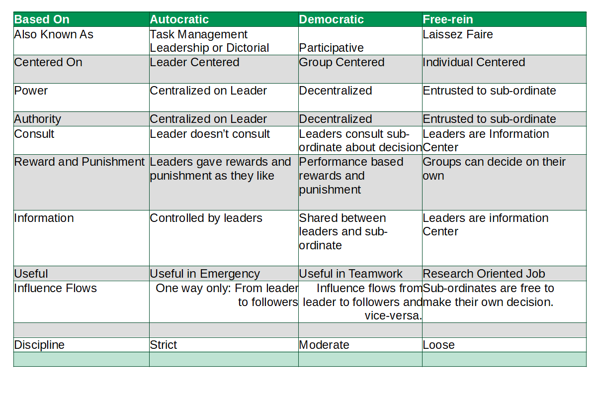

What is the main difference between Autocratic Leadership and Decentralized and Free-rein Leadership?
The main difference between Autocratic Leadership and Democratic leadership and Free-rein leadership is Autocratic Leadership Style is Leader centered whereas Democratic Leadership is Group Centered whereas Free-rein is Individual Centered.
| Based On | Autocratic | Democratic | Free-rein |
| Also Known As | Task Management Leadership or Dictorial | Participative | Laissez Faire |
| Centered On | Leader Centered | Group Centered | Individual Centered |
| Power | Centralized on Leader | Decentralized | Entrusted to sub-ordinate |
| Authority | Centralized on Leader | Decentralized | Entrusted to sub-ordinate |
| Consult | Leader doesn’t consult | Leaders consult sub-ordinate about decision | Leaders are Information Center |
| Reward and Punishment | Leaders gave rewards and punishment as they like | Performance based rewards and punishment | Groups can decide on their own |
| Information | Controlled by leaders | Shared between leaders and sub-ordinate | Leaders are information Center |
| Useful | Useful in Emergency | Useful in Teamwork | Research Oriented Job |
| Influence Flows | One way only: From leader to followers | Influence flows from leader to followers and vice-versa. | Sub-ordinates are free to make their own decision. |
| Figure | |||
| Discipline | Strict | Moderate | Loose |
Difference Between Autocratic Leadership vs Democratic Leadership vs Free-rein Leadership on the basis of Also Known As
Autocratic Leadership style is also known as Task Management Leadership or Dictorial Leadership Style whereas Democratic Leadership is also known as Participative Leadership whereas Free rein leadership is also known as Laissez Faire.
Difference Between Autocratic Leadership vs Democratic Leadership vs Free-rein Leadership on the basis of Centered On
Autocratic Leadership Style is Leader centered whereas Democratic Leadership is Group Centered whereas Free-rein is Individual Centered.
Difference Between Autocratic Leadership vs Democratic Leadership vs Free-rein Leadership on the basis of Authority
Autocratic Leadership is Centralized on leader whereas Democratic Leadership have Decentralized Authority whereas in free-rein all the authority in entrusted on sub-ordinates.
Difference Between Autocratic Leadership vs Democratic Leadership vs Free-rein Leadership on the basis of Consultation
In the Autocratic Leadership style Leader doesn’t consult whereas in the Democratic Leadership style Leaders consult sub-ordinate about decision and in the Free-rein Leadership style Leaders are Information Center only.
Difference Between Autocratic Leadership vs Democratic Leadership vs Free-rein Leadership on the basis of Reward and Punishment
Leaders gave rewards and punishment as they like in Autocratic Leadership whereas Performance based rewards and punishment is preferred in Democratic Leadership and in Free-rein Groups can decide on their own.
Difference Between Autocratic Leadership vs Democratic Leadership vs Free-rein Leadership on the basis of Usefullness
Autocratic Leadership style is useful in Emergency whereas Democratic Leadership style is useful in Teamwork and Free-rein Leadership Style is useful in Research Oriented Job.
Autocratic Leadership Style
This leadership style is leader centered and is also called authoritarian/dictatorial style. Under this style, power and decision making are centralized in the leader. The autocratic leaders rule with unlimited authority. Leaders make all decisions. Leaders have position based authority. Leaders give reward and punishment as they like. Information is controlled by leaders. Useful in emergency and factor floor situation.
Democratic Leadership Style
It is group centered and is known as participative or consultative style. Under this style, power and decision making is decentralized. Discussion, consultation and participation are encouraged. Leaders consult with subordinates about decision. Authority and responsibility are delegated. Influence flows both ways, from leader to follower and from follower to leader. Performance based reward and punishment are used with emphasis on results. Information is shared between leaders and subordinates. Useful in team work.
Free-Rein Leadership Style
It is individual centered and is also known as laissez-faire style. Under this style, power and decision making is entrusted to the subordinates. Subordinates have complete freedom of choice and can do as they like. Free rein leaders allow subordinates to decide and do not intervene. Leaders use very little power and control. They serve as information center. Subordinates have decentralized authority and responsibility. They have high degree of independence in decision making. Useful in research oriented job.